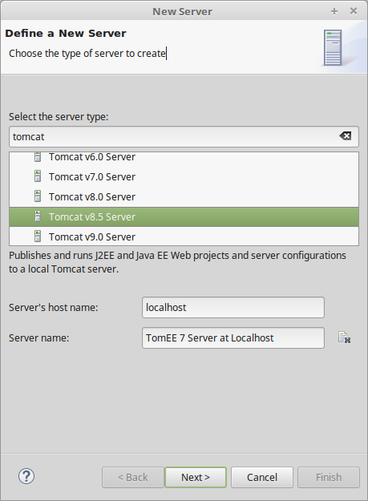
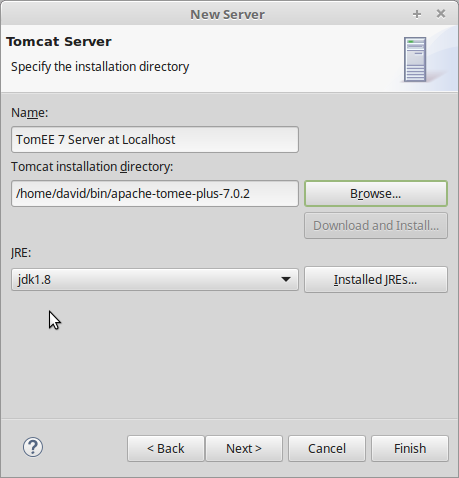
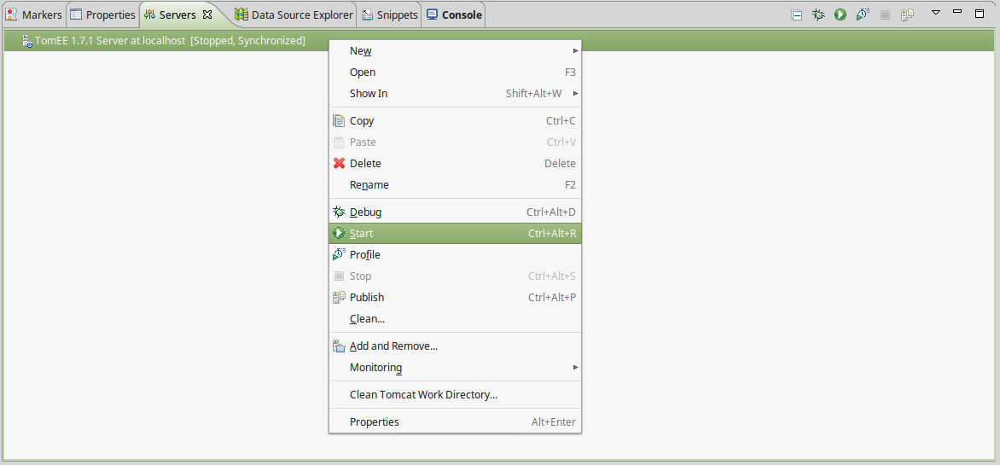

L'objectif de cette première partie du cours est la mise en place de l'environnement de développement pour réaliser les développements d'applications Java EE.
Pour cela, vous aurez au moins besoin :
- du kit Java de développement
- d'un environnement de développement : par exemple Eclipse
- d'un serveur d'application Java EE
Téléchargement des outils
La liste des outils requis est :
- Java 8 JDK
- Le kit de développement Java 8
http://www.oracle.com/technetwork/java/javase/downloads/jdk8-downloads-2133151.html - Eclipse IDE for Java EE Web Developpers
- L'environnement de développement
http://www.eclipse.org/downloads/packages/eclipse-ide-java-ee-developers/neon2 - Apache TomEE Plus
- Le serveur d'application Java EE
Windows : http://repo.maven.apache.org/maven2/org/apache/tomee/apache-tomee/7.0.2/apache-tomee-7.0.2-plus.zip
MacOS et Linux : http://repo.maven.apache.org/maven2/org/apache/tomee/apache-tomee/7.0.2/apache-tomee-7.0.2-plus.tar.gz
Installation des outils
L'installation du JDK dépend de votre plate-forme : il est distribué sous la forme d'un installeur pour Windows et MacOS, et sous la forme d'un package ou d'une archive sous Linux.
Eclipse et TomEE sont distribués sous la forme d'une archive (tar.gz pour Linux et MacOS et zip pour Windows) que vous pouvez décompresser où vous le souhaitez.
Configuration de Java dans Eclipse
Après avoir lancé Eclipse, il va falloir vérifier la version de Java utilisée par l'IDE et la modifier si nécessaire.
Pour vérifier les versions de Java disponibles dans Eclipse, ouvrez les préférences utilisateur : menu "Window > Preferences". Dans la zone de filtre en haut à gauche, saisissez "jre" (pour Java Runtime Environment) et sélectionnez dans l'arbre "Installed JREs" comme ci-dessous :

Vérifiez que le JDK que vous avez installé se trouve bien dans la liste des JRE détectés par Eclipse. De plus le JDK doit être coché pour indiquer à Eclipse qu'il s'agit de l'environnement d'exécution à utiliser par défaut pour tous les projets.
Si vous ne trouvez pas le JDK installé dans la liste, utilisez le bouton "Add..." pour l'ajouter manuellement :
- Pour le choix du type de JRE, choisissez "Standard VM" et cliquez sur "Next"
- Dans la boîte de dialogue "Add JRE", cliquez sur le bouton "Directory..." pour sélectionner le répertoire d'installation du JDK
- Eclipse s'occupe ensuite de remplir les champs nécessaires et vous n'avez plus qu'à cliquer sur "Finish"

Intégration de TomEE dans Eclipse
TomEE est un serveur complet qui peut être exécuté de manière autonome (comme un serveur de production par exemple). Cependant, pour simplifier les tâches de développement, nous allons l'intégrer dans Eclipse afin de pouvoir le démarrer et l'arrêter directement depuis l'IDE.
Dans Eclipse Java EE, il existe une vue pour créer et gérer les serveurs. Pour ajouter cette vue, il faut passer par le menu "Window > Show View > Servers".
Vous avez maintenant la vue "Servers" ajoutée à votre perspective de développement. Faites un click droit dans cette vue pour sélectionner "New > Server".
Dans la boîte de dialogue "Define a New Server", sélectionnez "Apache > Tomcat v8.5 Server" comme type de serveur. Vous pouvez également changer le nom du nouveau serveur par quelque chose de plus exact comme "TomEE 7 Server at localhost".
Cliquez ensuite sur "Next". Dans la boîte de dialoge "Tomcat Server", cliquez sur "Browse..." pour sélectionner le répertoire d'installation de TomEE sur votre disque.
Cliquez ensuite sur "Finish".
Vous disposez maintenant d'un serveur dans votre vue "Servers". Il ne vous reste plus qu'à le démarrer en faisant un click droit sur son nom et en sélectionnant "Start".
Si tout se passe bien, à la fin du lancement, vous pourrez accéder à votre serveur à l'adresse http://localhost:8080. Vous devez voir s'afficher une page d'erreur 404. Votre serveur fonctionne correctement mais aucune application Java EE n'est encore déployée pour répondre à cette adresse.